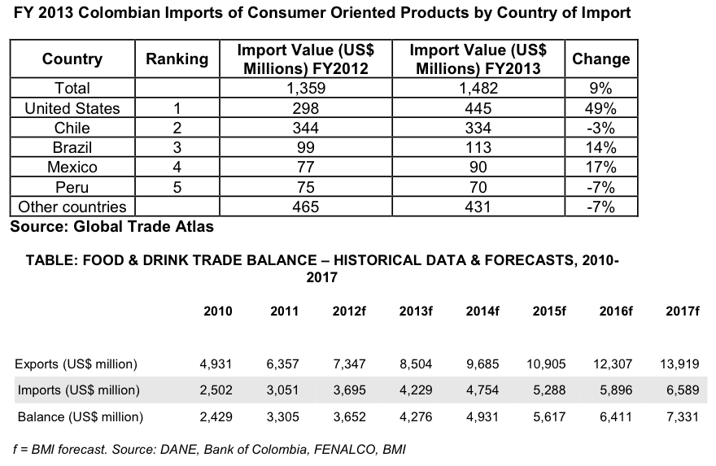

Colombia is a growing market for value-added, processed and packaged food products. This growth is partly due to the expansion of mass grocery retailers, with their chilled and frozen storage facilities. Also, producers are set to benefit from further retail expansion beyond the largest four cities (Bogota, Medellin, Cali and Barranquilla).
Middle-to-high-income consumers are showing a greater preference for convenience products. The prepared food market is increasingly being driven by the health and wellness trend, with health consciousness on the rise, generating an increased demand for value-added and premium products that are not generally regarded as essential.
Food Consumption. Between 2012 and 2017, total food consumption is expected to rise by 53.8 percent (nominal growth rate in local currency terms). This will stem from a projected 44 percent increase in per capita spending and 10 percent population growth. This translates into total food consumption growth of just over 66.8 percent over the next five years.
__Processed Food
Confectionery. Sales of non-essential products such as chocolate have recorded some of the biggest sales increases in Colombia over the past few years, as disposable incomes have risen. Between 2012 and 2017, value sales are forecast to increase by 30.7 percent. Colombia's confectionery sector benefits from the fact that almost two-thirds of the population is under 30. As in other markets, Colombian confectionery sales are influenced by the health and wellness trend, which is reflected in new products featuring a large proportion of low-sugar and fat-free products.
Canned Food. As disposable incomes rise and more consumers start to look for convenient meal options, canned food sales are expected to increase by 30 percent in value terms (local currency, nominal growth rate), and by 11.8 percent in volume terms between 2012 and 2017. In U.S. dollar terms, the canned food market is expected to increase by just over 41 percent. It can be expected that food manufacturers will continue to invest significantly in modernizing facilities and expanding production capacities, supported by rising investor confidence coupled with the improved security situation.
Consumption of jams/jellies in Colombia is expected to increase through 2017, from an estimated 1.55kg per capita consumption in 2012, to 2.04kg per capita in 2017. This growth is likely to be driven by increased demand for value-added and premium products from Colombian consumers. Domestic production of jams/jellies is substantial, at over 74,000 tons in 2012 and showing year-on-year growth of around 9 percent between 2012 and 2017.
Dairy. Due to the large percentage of the population that remains in the low income bracket, the consumption of dairy products in Colombia is lower in percentage terms than in many other countries in the Andean region. In 2012, per-capita consumption of ice cream stood at 2.5kg, cheese at 1.35kg and butter at 0.5kg. By 2017 ice cream consumption will increase to 3.52kg per capita, cheese consumption will increase to 1.43kg per capita and butter consumption will increase to 0.55kg per capita.
In all three dairy subsectors domestic production is substantial, accounting for the bulk of local consumption. Exports only account for a small proportion of total production. Currently, local producers account for around 98 percent of demand in Colombia. However, the United States-Colombia Trade Promotion Agreement (commonly referred to as the FTA) immediately removes tariffs on 52 percent of U.S. agricultural trade (with tariffs for the remaining products phased out over time). As a result, the U.S. gains duty-free, quota-free access for whey and lactose products, as well as increased quotas for cheese, ice cream and processed dairy products. In 2010, U.S. dairy exports to Colombia were estimated at US$6 million.
Meat. Within overall meat demand in Colombia, consumption of sausages is far higher than that for bacon/ham. In 2012, per-capita consumption of sausages stood at just over 8kg which is expected to rise to 12.28kg by 2016. In contrast, per capita consumption of bacon/ham stood at just 0.40kg in 2012 and is expected to increase to 0.49kg in 2017.
Domestic production of meat accounts for the majority share of local demand in both the bacon/ham and sausages sectors. Imports of bacon/ham are greater than the level for sausages and are forecast to increase more substantially year on year through 2017.
Healthy and indulgent products. Colombian consumers are increasingly aware of the need to adopt healthier eating habits but do not wish to sacrifice flavor. Manufacturers have responded to such demands by rapidly introducing healthier products without sugar, low in fat or free from trans fats. Soft rolls and snack bars are the categories with a wider variety of flavors and have the advantage that they can be taken and eaten anywhere, so in spite of busy lifestyles, healthier eating habits are not being cast aside.
A good example of this is in the sweet and savory snack category. Innovations in sweet and savory snacks to reduce trans fats and add healthy omega-3 fats helped to drive sales by tapping into the health trend. Furthermore, manufacturers released new flavors and texture mixes to appeal to a wider range of consumers and increasingly demanding and sophisticated palates. As a result, sweet and savory snacks was the best performer in 2011 with current value growth of eight percent.
__Beverages
Tea. The market for (hot) tea is starting to increase in Colombia due to augmented health consciousness and marketing efforts from the country's tea distributors. This is expected to result in an increase of tea consumption over the next five years.
Soft Drinks/Water. The bottled water market in Colombia offers, among others, natural, carbonated, flavored water, energizing water, and functional water(added vitamins and/or minerals). This niche has proven to be successful, as a result of increasing demand for sophisticated products. This will be driven by the growing presence of value-added products, in response to the increasingly sophisticated taste of consumers.
The share for natural water is 15.97 percent, for sodas 41.12 percent, and for flavored water 42.92 percent. In Colombia, a bottle of water costs an average of US$ 1, while a functional water costs up to US$ 2.80. The consumption of functional water has resulted from a 'wave' of health consciousness where the population is more interested in buying a product for its added value than for the price.
It’s estimated that the low income population consumes 40 percent of the water market, while the remaining 60 percent is the middle and high income classes. In Colombia there are a good number of companies in the soft drink sector (containing added sugar or flavor), including: Coca- Cola Femsa and Postobon. It is also important to mention that major retail chains in Colombia, like Jumbo and Almacenes Exito have their own production of these beverages.
In general, Colombian consumers appreciate U.S. products due to their excellent quality. Competitive prices are a decisive factor when competing in this market. The Colombian soft drink/water market is attractive for U.S. companies for various reasons:
These developments are supported by forecasts for the sector. Soft drink sales (in local currency, nominal terms) are expected to increase by just over 32 percent between 2012 and 2017. Growth for carbonated beverages is forecast to be modest due to the increased health consciousness of consumers; however, bottled water, fruit juices and functional drinks can be expected to experience particularly strong growth as a result of the aggressive marketing and promotional strategies of manufacturers.
Alcoholic Drinks. The growing popularity of beer among Colombia's middle class is predicted to increase volume sales by about 14 percent between 2012 and 2017. The growing appreciation of international premium varieties means that sales are expected to grow at a slightly faster rate.
Leading brands from international spirits firms are gradually finding markets in wealthy metropolitan areas, which will inevitably lead to an increase in consumption over the forecast period.